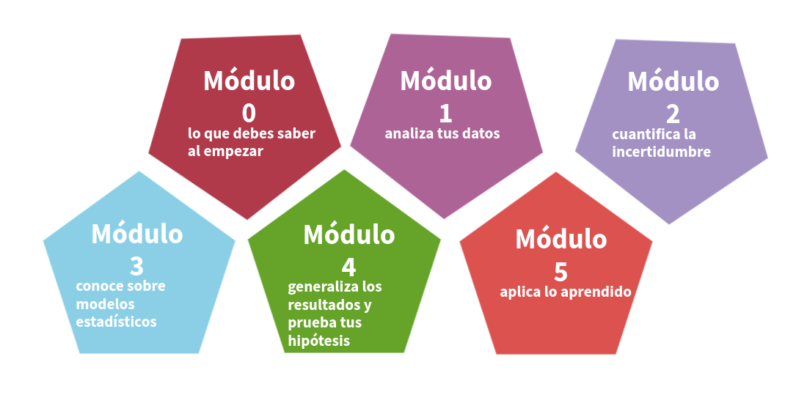

Introducción

Información general
| Nombre de la asignatura : | Probabilidad y Estadística |
| Código : | 300MAE005 |
| Departamento que ofrece : | Ciencias Naturales y Matemáticas |
| Créditos : | 3 |
| Horas de clase : | 5 semanales |
| Horas de monitoria : | 1 semanal |
| Prerrequisitos : | Cálculo integral |
| Modalidad : | Presencial |
Descripción
Este curso proporciona un enfoque básico de algunos métodos descriptivos, teoría de la probabilidad e inferencia estadística, los cuales son aplicados para enfrentar distintas actividades que estén relacionados con el quehacer profesional del estudiante. Con esto se pretende desarrollar competencias para el análisis de la información, la organización, una efectiva comunicación y de simulación estadística computacional.
A lo largo de toda la temática del curso, se proponen problemas que requieran de la aplicación de la estadística, con el fin de desarrollar el pensamiento probabilístico y estadístico, la capacidad de análisis, de argumentación de los procesos y de interpretación de resultados. También se proponen estudios de casos aplicados al contexto ingenieril y el desarrollo de un proyecto, para la parte descriptiva e inferencial del curso, para desarrollar adicional a las competencias antes mencionadas, competencias para el análisis de la información, la organización, una efectiva comunicación y la habilidad computacional. Adicionalmente, se proponen actividades de simulación computacional estadística para fortalecer el pensamiento probabilístico e inferencial y la habilidad computacional. Los objetivos del proyecto están restringidos a la temática del curso y a una base de datos real que se utilice y éste requiere de la escritura de un informe y de una defensa oral de resultados. Tanto los estudios de casos, como las simulaciones computacionales y el proyecto se resuelven usando el software estadístico R y R-Studio.
Este curso se desarrolla en cinco horas de clases semanales y una hora de trabajo del estudiante con el acompañamiento de un monitor. Las actividades durante las clases varían de acuerdo de la temática y objetivos de aprendizaje. Entre éstas, se encuentran las siguientes: el profesor presenta magistralmente la temática del curso con participación activa de los estudiantes en la solución de problemas. Además, los estudiantes resuelven guías con problemas, estudios de casos, problemas de simulaciones computacionales. Adicionalmente, los estudiantes participan en el desarrollo de un proyecto.
Objetivos de aprendizaje
La siguiente tabla corresponde a la importancia dada a cada uno de los resultados de aprendizaje (RA) y sus respectivos objetivos de aprendizaje
RA1: Apropiación y aplicación de conocimientos básicos en ingeniería y ciencias
RA3: Comunicación efectiva
RA6: Experimentación, medición y análisis
| RA | 1 | 2 | 3 | 4 | 5 | 6 | 7 |
|---|---|---|---|---|---|---|---|
| fórmula | 3 | 3 | 3 | ||||
| Indicador | 1.1[3] | 3.1[3] | 6.1[3] | ||||
| de | 1.3[1] | 3.2[3] | 6.2[3] | ||||
| desempeño | 1.4[3] | 3.3[3] | 6.3[1] | ||||
OA1.
Interpretar e implementar conocimientos de estadística y probabilidad a través de su participación activa en el análisis de información, situaciones y problemas en contexto y áreas de conocimiento que permita orientar la toma de decisiones informadas.
OA3.
Construir ideas a través de la elaboración e interpretación de argumentos de manera organizada y precisa, basados en evidencia estadísticas para favorecer el desarrollo de proyectos que aportan soluciones a problemas reales.
OA6.
Aplicar métodos estadísticos a través del lenguaje de programación R y herramientas de visualización para la solución a problemas que faciliten el aprendizaje de conceptos a través de simulaciones en el contexto de estadística y probabilidad para alcanzar validez de las soluciones propuestas.
Contenidos de la asiginatura
CA1: Módulo 1 Análisis de datos
1.1: Metodología estadística y bases de datos 1.2: Tablas de frecuencia e indicadores estadísticos 1.3: Visualización de datos
CA2: Módulo 2 Introducción a la probabilidad
2.1: Conceptos básicos y enfoques de probabilidad 2.2: Tipos de probabilidad y sus aplicaciones
CA3 :Módulo 3: Conoce sobre modelos estadísticos (Variable aleatoria)
3.1: Variables aleatorias 3.2: Variables aleatorias conjuntas 3.3: Modelos de probabilidad especiales
CA4 :Módulo 4: Generaliza los resultados y prueba tus hipótesis (Inferencia estadística)
4.1: Conceptos de inferencia estadística 4.2: Intervalos de confianza 4.3: Pruebas de hipótesis
CA5 Módulo 5: Aplica lo aprendido (Modelo de regresión lineal)
5.1: Modelo de regresión lineal simple 5.2: Modelo de regresión lineal múltiple

Este curso estará bajo metodología de aula invertida que propicia la participación activa del estudiante en el proceso de formación. Para su implementación el contenido del curso está dividido en 5 módulos, que a si vez se dividen en unidades.
ED1.
Clase magistral: [Plataforma web, videos, guías de aprendizaje, computador, tableta, herramienta computacional]
ED2.
Método del caso: [Guía de aprendizaje con enunciado de caso, computador, herramienta computacional]
ED5.
Aprendizaje basado en problemas: [Guía de aprendizaje con enunciados de problemas, solucionario de problemas]
ED8.
Aprendizaje basado en simulaciones: [Guía de aprendizaje con situaciones problema, herramienta computacional]
Nota:
La herramienta computacional propuesta para el curso es R (RStudio)